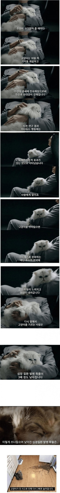
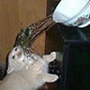
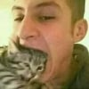
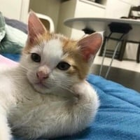
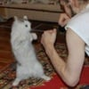

뭐? 레닌?

대충 치와와 쓰다듬는데 발광하는 짤
집사야 어서 와보거라!!!
가끔 랜덤으로 구토이벤트 발생하는대 패브릭소파에 죄다 토해서 물들거나 갈은지 하루이틀된 침대 요에 똥스키 타면 입에서 저절로 욕이나옴
어케 참음?

털만 아니었어도..
고양이 뿐만 아니라 털 있는 동물을 쓰다듬기만 하면 되겠지?
닉네임이 의미심장하네요
무슨 생각을 하는거야 킷사마
습박 모두 이사람한테 돌던졋

냉정하게 고양이 한번 키우고 깨달은건데 반려동물도 초반에야 이쁘고 귀엽지 시간 지나다보면 결국 질려서 잘 안놀고 무관심해져버림.. 그거 깨닫고 두번다신 반려동물 안키움...너무 순수 사람의 이기적인 마인드같음 시간 지나도 잘키우는사람은 제외겟다만
